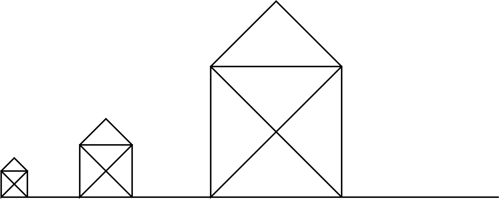
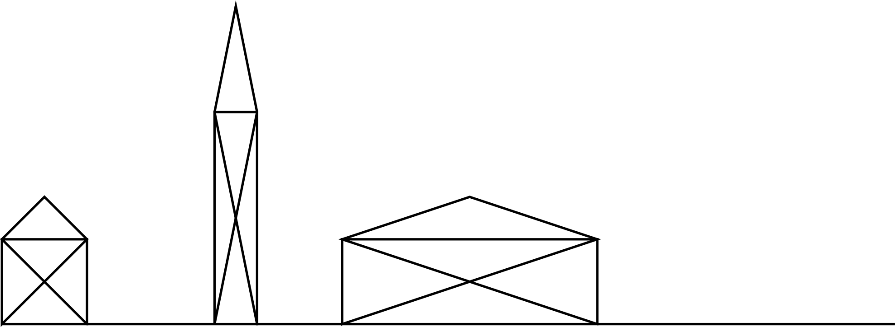

Trocha experimentování. Zkus se zamyslet, jestli jsi „dobře” pochopila otázku.
Co se stane, když tělo nějaké funkce necháš prázdné?
Co se stane, když necháš prázdné tělo cyklu?
Procvičení funkcí. Jestli jsi pythonní funkce nepsala už před kurzem, tak první z těchto projektů určitě udělej. Druhý jen pokud máš ráda geometrii :)
Napiš funkci, která vykreslí domeček dané velikosti. (t.j. velikost se zadá argumentem)

Máš-li ráda geometrii*, můžeš zkusit dávat domečkové funkci dva argumenty:
šířku a výšku.
Je potřeba si vzpomenout na Pythagorovu větu a funkci tangens.
Pozor, funkce tan vrací výsletek v radiánech;
je potřeba ho převést na stupně (from math import degrees).

* t.j. jestli nemáš ráda geometrii, tak tenhle projekt přeskoč
Procvičení programování. Často je jednoduché něco napsat, ale dotažení do konce může být časově náročné. Nemáš-li čas, zkus se aspoň zamyslet, jak bys projekt vyřešila.
Změň program Kámen, Nůžky, Papír tak, aby opakoval hru dokud
uživatel nezadá konec.
Změň funkci ano_nebo_ne tak,
aby se místo ano se dalo použít i a,
místo ne i n
a aby se nebral ohled na velikost písmen a mezery před/za odpovědí.
Textům jako možná nebo no tak určitě by počítač dál neměl rozumět.
Sada zajímavých (snad) prográmků, které bys teď měla být schopná napsat. Nemáš-li čas, zatím je přeskoč.
Napiš program, který se zeptá na příjmení uživatelky/uživatele a zkusí podle něj uhodnout její/jeho pohlaví.
Najdi na internetu text své oblíbené písně, zkopíruj si ho do řetězce a zjisti, kolikrát je v něm použito písmeno K.
Napiš program, který simuluje tuto hru:
První hráč hází kostkou (t.j. vybírají se náhodná čísla od 1 do 6), dokud nepadne šestka. Potom hází další hráč, dokud nepadne šestka i jemu. Potom hází hráč třetí a nakonec čtvrtý. Vyhrává ten, kdo na hození šestky potřeboval nejvíc hodů. (V případě shody vyhraje ten, kdo házel dřív.)
Program by měl vypisovat všechny hody a nakonec napsat, kdo vyhrál.
Nakonec trošku delší projekt. Budeme na něm stavět dál; nedokončíš-li ho teď, budeš ho muset dodělat před příští sadou projektů.
1-D piškvorky se hrají na řádku s dvaceti políčky. Hráči střídavě přidávají kolečka (`o`) a křížky (`x`), třeba:1. kolo: -------x------------ 2. kolo: -------x--o--------- 3. kolo: -------xx-o--------- 4. kolo: -------xxoo--------- 5. kolo: ------xxxoo---------Hráč, která dá tři své symboly vedle sebe, vyhrál.
Napiš funkci vyhodnot, která dostane řetězec
s herním polem 1-D piškvorek
a vrátí jednoznakový řetězec podle stavu hry:
"x" – Vyhrál hráč s křížky (pole obsahuje "xxx")"o" – Vyhrál hráč s kolečky (pole obsahuje "ooo")"!" – Remíza (pole neobsahuje "-", a nikdo nevyhrál)"-" – Ani jedna ze situací výše (t.j. hra ještě neskončila)Napiš funkci tah, která dostane řetězec s herním polem,
číslo políčka (0-19), a symbol (x nebo o)
a vrátí herní pole (t.j. řetězec) s daným symbolem umístěným na danou pozici.
Hlavička funkce by tedy měla vypadat nějak takhle:
def tah(pole, cislo_policka, symbol):
"Vrátí herní pole s daným symbolem umístěným na danou pozici"
...Můžeš využít nějakou funkci, kterou jsme napsaly už na sraze?
Napiš funkci tah_hrace, která dostane řetězec s herním polem,
zeptá se hráče, na kterou pozici chce hrát, a vrátí herní pole
se zaznamenaným tahem hráče.
Funkce by měla odmítnout záporná nebo příliš velká čísla
a tahy na obsazená políčka.
Pokud uživatel zadá špatný vstup, funkce mu vynadá a zeptá se znova.
Napiš funkci tah_pocitace, která dostane řetězec s herním polem,
vybere pozici, na kterou hrát, a vrátí herní pole
se zaznamenaným tahem počítače.
Použij jednoduchou náhodnou „strategii”:
Hlavička funkce by tedy měla vypadat nějak takhle:
def tah_pocitace(pole):
"Vrátí herní pole se zaznamenaným tahem počítače"
...Napiš funkci piskvorky1d, která vytvoří řetězec s herním polem
a střídavě volá funkce tah_hrace a tah_pocitace,
dokud někdo nevyhraje nebo nedojde k remíze.
Nezapomeň kontrolovat stav hry po každém tahu.
Poslední projekt je nepovinný, ale, jak to u podobných projektů bývá, můžeš na něj dostat zpětnou vazbu. Doporučuju toho využít!
Zvládneš pro počítač naprogramovat lepší strategii? Třeba aby se snažil hrát vedle svých existujících symbolů nebo aby bránil protihráčovi?
Stačí jen docela malé vylepšení!